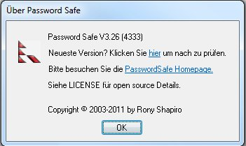

Das Menü Hilfe hilft beim Zugang zu den verschiedensten Quellen zu und über Password Safe.
Öffnet diese Hilfedatei.
Öffnet die Password Safe Home Page im Browser.
Diese Option eröffnet ein Dialogfenster mit der Versionsnummer und einem Copyright Hinweis. Ebenfalls können Sie hier nachprüfen ob eine neuere Version von Password Safe vorhanden ist. Beachten Sie dass die Datenbank von Password Safe aus Sicherheitsgründen geschlossen wird bevor ein Verbindung zum Internet aufgebaut wird, um auf eine neuere Versionen abzuprüfen.
